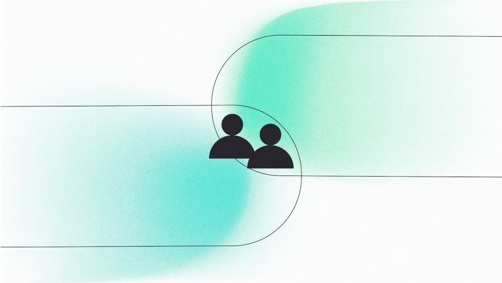

Menu
Product & design
Component Matrix Library
As a thesis project, I've designed a customizable digital platform in 17 weeks, speeding up the production process of building components and working with designers, developers, and other stakeholders at Digital Agency DPDK.
Project CML | Home
Project CML | Get started
Project CML | Component overview
Project CML | Brand styles
Project CML | Resources
Component Matrix Library
Project introduction
The challenge
Designers and developers within DPDK do not currently have a digital solution that provides documentation of the work processes and an overview of reusable and scalable components they can use for clients. There is an increased complexity of work in the current production process with higher expectations are set by the clients. Subsequently, budgets do not increase proportionally and the Digital agency has to work with the same or fewer budgets resulting in the need to speed up the entire current production process and make it more flexible so that the shorter time available in sprints can be better utilized. Also, the designers and developers also experience while building websites that extra work arises from rebuilding the same or similar components over and over again. This lacks documentation and an overview of the components to speed up and streamline the production process and meet client requirements.
The goal
The designers, developers, and other stakeholders within DPDK can use a digital solution in which the documentation of the entire production process and an overview of reusable and scalable components, design and develop unique high-quality websites. This allows the combination between effectiveness and customization to speed up and ease the entire production process for the designers, developers and other stakeholders.
Used method
In this project, I used the Double Diamond method, which consists of four phases: Discover, Define, Develop, and Deliver. This approach allowed me to concentrate on the problem at hand and work towards finding effective solutions, employing both divergence and convergence of ideas. By utilizing the Double Diamond framework, I could thoroughly validate each activity, either individually or with the input of others. This ensured a comprehensive and well-informed process throughout the project.
The highlighted progression that led to the final product
phase 01
User research
By doing User research with various research methods I was able to gather multiple insights that were shaped into concepts and at the end, the final product. To start of I set up Bussines objectives and did a Benchmark to validate functions within exsisting industry standard design systems. After doing Semi-structured interviews I was able to bundle all gathered information into User needs, User stories and finally in a User journey map that formed the following most important user insights:
Include the stages of Atomic design
Use the hierarchy of the Atomic Design method to create an structured overview of the 24 default components that the Designers and Developers want to use in multiple stages like Atoms, Molecules and Organisms.
Add documentation
Create documentation for the multiple departments for each specific role for the designers, developers and other stakeholder. The documentation consists out of different functions to increase collaboration and to create a bigger understanding. Describe a roadmap to communicate what steps each role takes. Also include best practices with tutorials to build components. Appoint one person for each library across the departments with a CTA so that the owner of the library can be contacted.
Make components scalable and re-usable
Define the default style of the components with the correct specifications like font, color and icon usage that fit the brand of the Digital Agency and pushes the visual style to a new level.
Include external resources
Create an overview out of all internal and external resources that the company has to create one digital environment where resources be accessed and updated so that no information get’s lost.
phase 02
Concept ideation
Using the insights gathered, I translated all user needs and acquired information into system requirements. I prioritized the most important requirements using the MOSCOW prioritization method, which eventually led to the creation of multiple concepts. To further develop these concepts, I engaged with ChatGPT through various prompts to redefine and refine the ideas based on the data and insights gathered. The assistance of this AI tool enabled me to validate the results and solidify the final concepts. Throughout the process, I actively sought feedback from others and ensured that each concept underwent validation with the end-users from the Digital Agency. After careful consideration, a decision was made to merge two concepts, resulting in a combination of a database of documentation and a blueprint overview of the components. This integration led to what is now known as the Component Matrix Library (CML).
Final concept
As a thesis project I’ve designed a customizable digital platform in the duration of 17 weeks that speeds up the production process of building components by designers and developers of Digital Agency DPDK. The Component Matrix Library (CML) is a digital prototype that provides documentation and an overview of components according to the stages of the Atomic Design Method. This digital solution can be used by designers, developers and other stakeholders to access components and associated documentation to use the components scalable and re-useable. Per component the user can see the specifications like used color, font, sizing and icon usage to work consistently. CML improves productivity, knowledge transfer and collaboration between different departments, and enables the delivery of high-quality websites within tight budgets. It provides a hierarchical ordering of components and specific component blueprint views to ensure consistency.
phase 03
Information architecture
To create the High-fidelity prototype, a well-organized information architecture was crucial. The process commenced with the development of a Sitemap, followed by a Flowchart, and eventually the Wireframes (low-fi prototype). Through these steps, all the final pages of Project CML were defined, taking into account the diverse system requirements and user needs that paved the way for this final outcome:
phase 04
Visual design
In order to bring the product to its final stage, I incorporated the established branding, as per the Styleguides, into new Styletiles, giving CML a modern and distinctive edge over the other internal products that had been made. While the DPDK branding remained recognizable, it also served as a example for internal inspiration to revamp their entire branding approach. Following the creation of the Styletiles, I proceeded to craft a range of visuals for the prototype. To begin this process, I utilized Blender and drew inspiration from the various examples I had gathered during the Styletile phase. For the Illustration visuals, I came up with a new style that the DPDK can use in the future.
Blender visuals
Illustration visuals


afterwards
Reflection
Learnt lessons
Gather as much data as possible in a project I learned that interviewing as many end-users as possible has a big impact on the final product. I chose to interview more people than required, and it resulted in many new insights. For future projects, I'll try to interview as many respondents as I can to gather the most data.
Gaining more knowledge of semantic writing in prompts while ideating on concepts, I learned to work with ChatGPT and got useful feedback from team members on how to write semantic prompt in the AI tool. For example I learned a couple of tricks for example to describe how ChatGPT should act as a spefic role. Also while generating concepts that it helps to get a understandable result to ask if ChatGPT could explain the given data as todler, so that it comes up with a clear explaination and with understandable examples. For future projects I want to learn more about semantic prompting to improve my interactions with AI tools.
Maintaining good communication is crucial in this process with the target audience helped in validating activities and receiving timely feedback. Short communication lines allowed for quick adjustments and ensured the project stayed on track.
Use the Double Diamond method as a visual representation throughout a project, I found that using visual representations, such as the Double Diamond method, was incredibly helpful in presenting my progress to mentors and stakeholders in a clear and concise manner. The visual approach allowed them to easily understand the different phases and activities I was undertaking, giving them a comprehensive overview of my project's trajectory. I am eager to utilize this approach in future projects as it proved to be an effective way to communicate complex concepts and showcase the project's development in a visually appealing manner.

next project